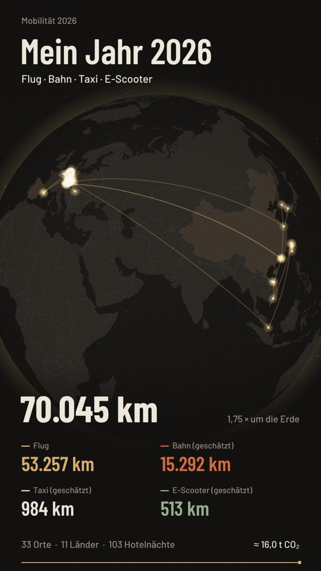
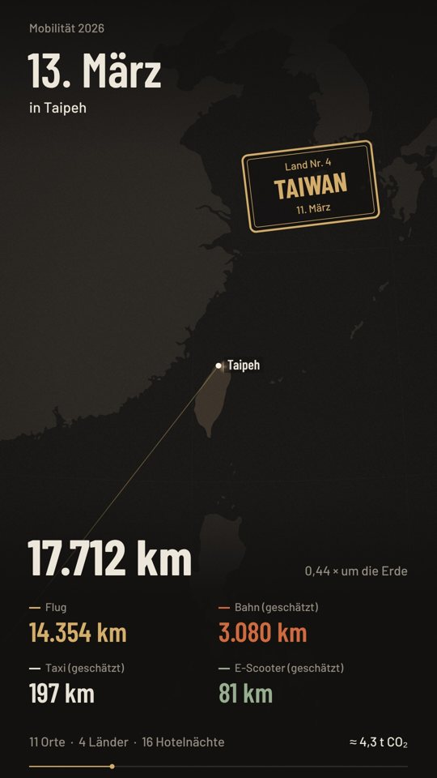
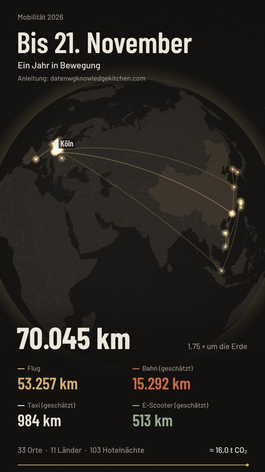

Buchungsbestätigungen, Taxi-Belege und Scooter-Zahlungen liegen ohnehin im Postfach. Daraus wird ein 50-Sekunden-Reel: ein dunkler Globus, der jede Strecke des Jahres nachfährt und die Kilometer je Verkehrsmittel hochzählt. Hier steht, wie es gebaut ist und wie du dein eigenes machst.
Die Live-Karten der Bahn, auf denen Züge als Punkte durchs Land wandern, haben einen eigenen Sog. Die Frage war: Geht das auch für ein einzelnes Jahr eines einzelnen Menschen, ohne dass der Mensch dafür ein Jahr lang etwas aufschreiben muss?
Es geht, weil fast jede Bewegung einen Beleg hinterlässt. Das Hotel schickt eine Bestätigung, die Airline einen Reiseplan, Uber eine Quittung, der Scooter-Verleih bucht über PayPal ab. Ein KI-Agent mit Zugriff aufs Postfach liest das aus, räumt Stornos und Doppelte weg und leitet daraus eine Reiseroute ab. Den Rest erledigt eine einzige HTML-Seite mit einem Canvas.
Gebaut ist das Ganze an einem Vormittag im Gespräch mit Claude: erst ein Kosten-Dashboard, dann die Frage „Kannst du daraus auch eine Karte machen?“, dann drei Runden Feinschliff.
Die Karte sieht präziser aus, als die Daten sind. Deshalb steht im Video an drei von vier Zählern „geschätzt“.
| Verkehrsmittel | km | So gerechnet |
|---|---|---|
| Flug | 53.257 | Großkreis-Entfernung je Strecke, Umsteigen über Paris und Zürich mitgerechnet. Nicht genutzte Tickets zählen nicht. |
| Bahn | ≈ 15.292 | Aus der Reihenfolge der Hotels abgeleitet, Luftlinie × 1,25. Mit BahnCard 100 gibt es keine Fahrtbelege. |
| Taxi | ≈ 984 | Fahrpreis ÷ Preis je km im jeweiligen Land, von 0,50 € in Vietnam bis 2,80 € in Deutschland. |
| E-Scooter | ≈ 513 | Rund 0,8 km je Euro Fahrpreis, höchstens 12 km je Fahrt. Abos zählen keine km. |
Die Bahn-Regel in einem Satz: Basis ist der Wohnort; beginnt ein Hotelaufenthalt woanders, gibt es eine Fahrt dorthin, und nach dem Check-out in Europa geht es nach Hause, außer der nächste Aufenthalt schließt direkt an. Das trifft nicht jede einzelne Fahrt, aber die Größenordnung.
Der CO₂-Zähler rechnet mit Durchschnittswerten des Umweltbundesamts je Personenkilometer: 290 g fürs Flugzeug (Inlandsflug 2024, inklusive Nicht-CO₂-Effekte), 26 g für den Bahn-Fernverkehr, 164 g fürs Taxi (Pkw-Wert). Langstreckenflüge liegen je Kilometer eher darunter, die 16 Tonnen sind also eine Obergrenze. Quelle: Umweltbundesamt, Emissionsdaten.



Der Look heißt bei uns „Dark Kitchen“: Anthrazit statt Schwarz, matte Körnung, dazu vier Akzentfarben aus Küchen-Materialien, also Messing für Flug, Kupfer für Bahn, Marmor für Taxi und Salbei für Scooter.
Du brauchst ein Postfach mit Belegen, einen KI-Agenten mit Zugriff darauf (bei uns Claude mit Gmail-Anbindung) und etwas Geduld beim Gegenlesen. Die Technik dahinter ist klein: d3 für die Projektion, eine Weltkarte als TopoJSON, ein Canvas.
render(t) gezeichnet.Mit diesen drei Prompts kommst du in einem Agenten wie Claude ans Ziel:
Werte mein Postfach für 2026 aus: alle Hotelbuchungen (Booking, Airbnb), Flüge, Uber- und Freenow-Fahrten und E-Scooter-Zahlungen (Bolt, Voi, Lime, auch über PayPal). Stornos raus, nichts doppelt zählen, Fremdwährungen in Euro. Bau mir daraus ein Dashboard.Leite daraus eine Reiseroute ab: Basis ist [Stadt]. Flüge exakt mit Großkreis-km, Bahnfahrten zwischen den Hotels geschätzt (Luftlinie × 1,25), Taxi- und Scooter-km aus dem Fahrpreis geschätzt. Speichere alles als mobility.json mit legs, visits und rides.Bau daraus eine animierte Globus-Karte im Dark-Kitchen-Look (Anthrazit, Messing, Kupfer, Marmor, Salbei). Die Kamera folgt jeder Strecke, Zähler zeigen km je Verkehrsmittel, Orte und Länder. Start mit dem Endbild als Hook, ein Stempel je neuem Land, CO₂ grob mitzählen. Render ein 9:16-MP4 fürs Reel.Die vollständige Anleitung mit Datenmodell, Haversine-Formel, Kilometerpreisen je Land, Zeitplan der Animation, Ebenen je Bild und dem ffmpeg-Befehl gibt es als eine Datei:
Die Markdown-Datei kannst du direkt einem KI-Agenten geben. Sie enthält keine persönlichen Daten, nur das Rezept.
So eine Karte ist ein ziemlich genaues Bewegungsprofil. Drei Dinge lohnen einen zweiten Blick:
Kartendaten: Natural Earth über das Paket world-atlas (gemeinfrei). Emissionswerte: Umweltbundesamt. Alle Kilometer außer den Flügen sind Schätzungen aus Belegen.